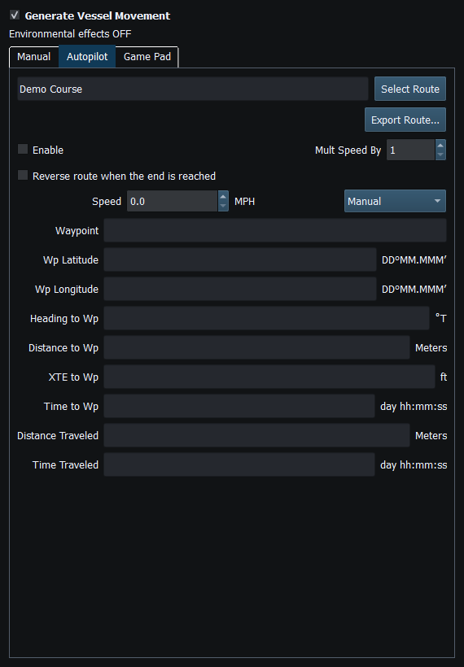
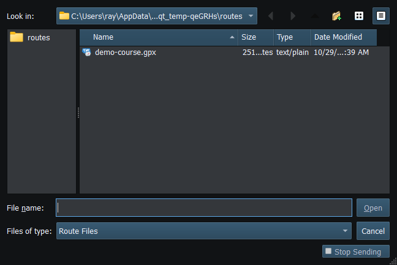

GPX/KML Import reads one validated ordered route into pending Vessel Movement state. It does not merge unrelated routes, activate navigation or authorize transmission. Work on a copy when investigating a file from another application.
Path, for example, is a valid displayed route name, does not mean selection failed.| Format | Accepted input / important boundaries |
|---|---|
| GPX | One route with ordered rtept points, or one continuous track segment when there is no route. GPX 1.0/1.1 and supported namespace-free files. Standalone waypoints are not an ordered route. |
| KML | One LineString or supported gx:Track; supported ordered Point collections where unambiguous. Multiple paths/ambiguous separate containers are rejected rather than joined. |
| Coordinates | Finite latitude −90…90 and longitude −180…180 degrees. Text order in KML geometry is longitude,latitude. |
| Bounds | 4 MiB input, 25000 points, bounded XML depth/elements. Consecutive points closer than 1 mm are removed; a usable route still needs at least two distinct points. |
Names, order and practical double-precision coordinates are retained. Supported KML speed metadata is interpreted in knots and converted to metres/second; absent speed metadata is not invented. An ordinary GPX route does not automatically supply a usable Route File speed profile.
Export a single route at a time from OpenCPN. GPX file exchange does not require a chartplotter route service. Cancelled selections, malformed files and unsupported multi-route data leave the previous valid selection intact.
Reading guide: The route-name field sits immediately left of Select Route. Export Route is below it. Autopilot Enable remains a separate action and is unavailable while Manual movement is active.

Figure 76. The route-name field shows Demo Course. Enable Autopilot separately to start following it. Click to enlarge.

Figure 77. Choose the GPX or KML route file to load. Click to enlarge.
Route Overview · GPX/KML Export · Selecting Chartplotter Routes · Route Requests and Authorization · Navigation Measurements · Connection Troubleshooting · Enable, Dispatch and Sending · Engineering Units